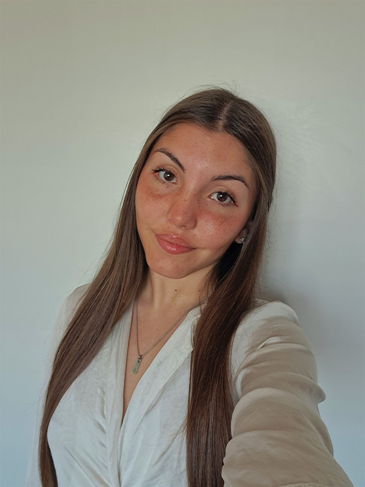

Córdoba, Argentina
Lucía Antonella Biasutto
Ingeniera en Software | QA Engineer
Combino ingeniería de software, testing y automatización para construir y validar soluciones digitales confiables. Me interesa crear productos de calidad, detectar problemas y mejorar continuamente la experiencia del usuario.

Perfil
Sobre mí
Soy Ingeniera en Software con título intermedio de Analista de Software. Actualmente trabajo como QA Engineer, con experiencia en pruebas funcionales, automatización de pruebas y validación de APIs.
Mi recorrido combina desarrollo web, soporte técnico y aseguramiento de calidad. Me interesa la calidad del software, la resolución de problemas y la mejora de la experiencia del usuario, con base también en frontend y backend.
Trayectoria
Experiencia profesional
-
QA Engineer
- Diseño y ejecución de pruebas funcionales y automatizadas.
- Automatización de pruebas con Playwright y Python.
- Testing y validación de APIs mediante Postman.
- Gestión de código y colaboración mediante Git y GitLab.
- Uso de Jira y Splunk en el seguimiento de incidencias y los procesos de QA.
-
Desarrolladora Web y Soporte Técnico
- Desarrollo y mantenimiento de funcionalidades web.
- Pruebas funcionales y validación de aplicaciones.
- Colaboración en tareas técnicas y procesos de mejora de productos digitales.
-
Pasantía profesional
- Colaboración en el desarrollo de una landing page.
- Participación en pruebas funcionales de una aplicación.
- Trabajo con control de versiones, documentación y metodologías ágiles.
Selección
Proyectos destacados
Trabajos que reflejan mi enfoque en calidad, desarrollo y validación de productos digitales.
App de gestión de turnos médicos
Aplicación para la gestión de turnos médicos con una API REST y una interfaz web, enfocada en organizar la información y facilitar la interacción con el sistema.
Landing page de billetera virtual
Participación en el diseño, desarrollo y mantenimiento de una landing page para un producto financiero digital.
Testing de aplicación Aliados
Participación en pruebas funcionales de una aplicación destinada a la gestión de productos en restaurantes, verificando comportamientos y validando funcionalidades.
Stack
Habilidades técnicas
Lenguajes
Frameworks y tecnologías
QA y testing
Herramientas
Metodologías
Académico
Formación
Universidad Siglo 21
Ingeniería en Software
Título intermedio obtenido: Analista de Software.
Formación complementaria
- Curso de React JS Udemy · 2025
- Programación Orientada a Objetos Academia Integral Capacitado · 2021
Idiomas
- Español Nativo
- Inglés Nivel B2
Contacto
¿Trabajamos juntos?
Estoy abierta a conectar con profesionales y participar en proyectos relacionados con calidad de software, automatización y desarrollo de productos digitales.